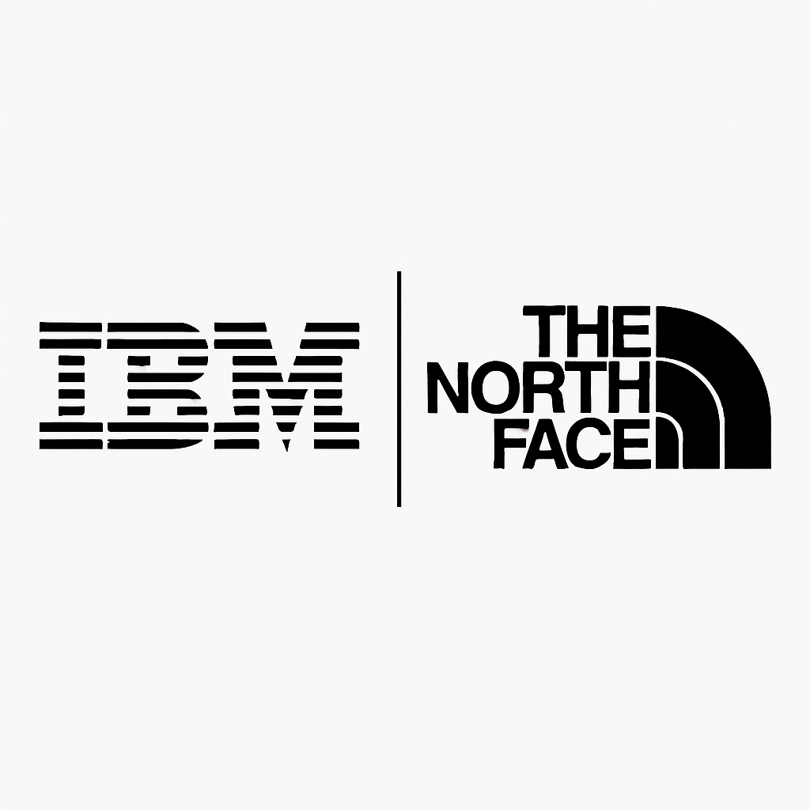
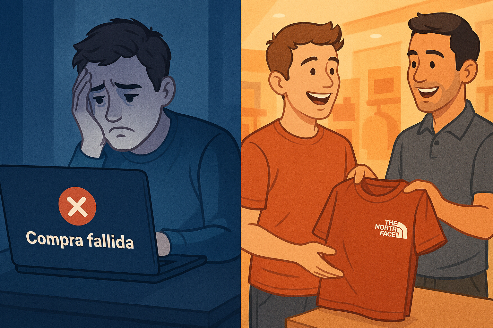
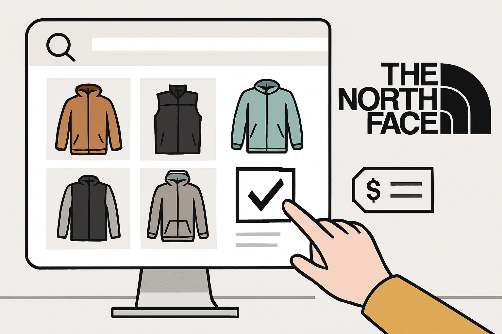

La Inteligencia Artificial ha irrumpido con fuerza en las empresas de todos los
sectores. Tanto es así, que muchas compañías han comenzado a incorporar
modelos de este tipo para aumentar su productividad o mejorar ciertos procesos.
El Machine Learning o aprendizaje automático, es una vertiente de la IA que se
basa en generar algoritmos que permiten a los ordenadores aprender a partir de
datos.
Proyecto XPS The North Face
La inteligencia artificial y el machine
learning están transformando la
experiencia de compra online,
acercándola al nivel de personalización
que se encuentra en una tienda física.
The North Face, en colaboración con
IBM, se posicionó como un pionero en
este campo al implementar su modelo XPS (eXpert Personal Shopper), un claro
ejemplo de cómo el machine learning supervisado puede resolver problemas
complejos de negocio y elevar la satisfacción del cliente.

Esta empresa antes de implementar su proyecto XPS, la experiencia de compra
era completamente diferente entre sus canales físicos y digitales. En sus tiendas,
la marca se basaba en el conocimiento y la asesoría de sus vendedores, quienes
guiaban a los clientes a través de preguntas detalladas para recomendarles el
equipo adecuado. Este enfoque personalizado era la esencia de la marca,
construyendo confianza y asegurando la satisfacción del cliente. Sin embargo, su
tienda en línea operaba bajo un modelo de autoservicio, con herramientas de
búsqueda y filtros inadecuados para la complejidad técnica de sus productos, lo
que a menudo frustraba a los clientes y los llevaba a abandonar la compra o a
elegir el equipo incorrecto.

Esta diferencia representaba un riesgo significativo para la marca, ya que no
lograba transferir su valor fundamental, su experiencia de compra al creciente
mercado digital. El sistema XPS, desarrollado con IBM Watson, se implementó
precisamente para cerrar esta brecha, replicando digitalmente la conversación y
el asesoramiento experto que se ofrecía en las tiendas físicas. El objetivo era guiar
a cada cliente en línea, de manera individualizada, asegurando que encontraran el
producto perfecto para sus necesidades, tal como lo haría un vendedor experto en
persona.
Como funciona el proyecto XPS
A diferencia de un motor de búsqueda o un robot con respuestas predefinidas, el
sistema XPS aprovecha el poder del Procesamiento del Lenguaje Natural para
interpretar lo que los clientes realmente quieren decir, usando sus propias
palabras. Esto se consigue gracias a dos elementos esenciales: la clasificación de
la intención, que averigua qué busca el usuario, como una sugerencia, y el
Reconocimiento de Entidades Nombradas, que identifica datos importantes como
la actividad, el sitio y el momento de la consulta.

Después de que la inteligencia artificial ha analizado a fondo lo que se pide, utiliza
un motor de sugerencias para relacionar las características sacadas del cliente
con las características técnicas de su oferta de productos. Esto le facilita
proponer algunas alternativas que encajen por completo con lo que el usuario
necesita en concreto. además, el sistema puede charlar con el cliente para
perfilar aún más la búsqueda, formulando preguntas complementarias como las
que haría un vendedor experimentado, consiguiendo así una sugerencia
personalizada.
Beneficios del Proyecto XPS
La implementación del sistema XPS, potenciado por IBM Watson, ofreció a The
North Face beneficios estratégicos y transformadores, permitiéndole replicar la
experiencia de asesoramiento experto de sus tiendas físicas en su plataforma
digital. Esta solución tecnológica no solo aumentó las ventas y el valor promedio
de las órdenes al guiar a los clientes hacia el producto correcto, sino que también
fortaleció la marca al posicionarla como un líder innovador en retail y al generar
una mayor lealtad del cliente. Además, cada interacción con el sistema
proporcionó a la empresa datos valiosos sobre el comportamiento y las
necesidades de los clientes, lo que le permitió optimizar sus operaciones, desde
el desarrollo de productos hasta la gestión de inventario y marketing, logrando así
una experiencia de compra experta y escalable a nivel global
{% endblock %}